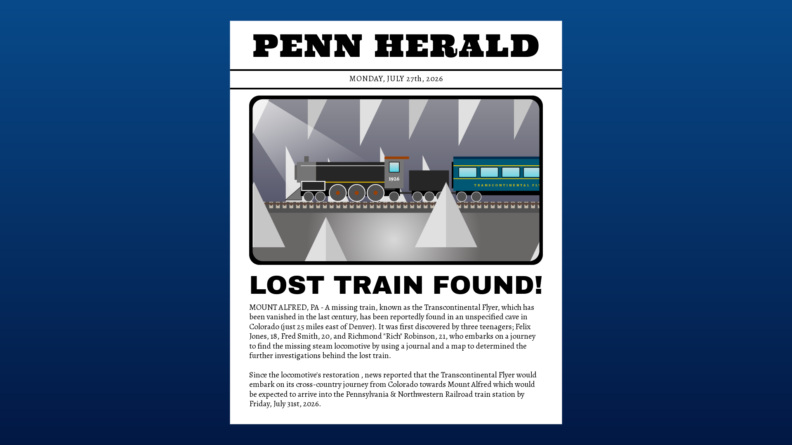

✓ INVESTIGATION COMPLETE
You Found the Lost Train!
After more than a century, the mystery of Mount Alfred has finally been solved.

The Truth Revealed
Felix, Fred, and Rich stand silently inside the enormous mountain chamber. The locomotive is still there, hidden from the world for generations.
Felix: "We actually found it."
Fred: "After all these years..."
Rich: "Everyone in Mount Alfred is going to want to see this."
The friends return to town and tell Mr. McGuffin what they discovered. With the help of the community, the locomotive is carefully restored.
Mr. McGuffin: "My grandfather spent his entire life wondering what happened to that train."
Felix: "Now everyone will know the story."
Mr. McGuffin: "And that's exactly why history matters."
Months later, the arrival of the Lost Train, which simply becomes the Transcontinental Flyer, becomes the centerpiece of returning a true passenger train service in the town of Mount Alfred.